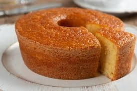

Receita de Bolo de Milho

Ingredientes
- 1 lata de milho verde escorrido
- 1 lata de leite (use a lata do milho como medida)
- 1 lata de açúcar
- 1/2 lata de óleo
- 1 lata de fubá
- 3 ovos
- 1 colher (sopa) de fermento em pó
- 1 pitada de sal
Modo de Preparo
- Bata no liquidificador o milho, o leite, o açúcar, o óleo, o fubá e os ovos até ficar homogêneo.
- Adicione o fermento e o sal e bata rapidamente só para misturar.
- Despeje a massa em uma forma untada e enfarinhada.
- Leve ao forno preaquecido a 180°C por cerca de 40 minutos ou até dourar.
- Espere esfriar, desenforme e sirva.
Fonte
https://www.tudogostoso.com.br/receita/186802-bolo-de-milho-verde-da-espiga.html
Menu Principal